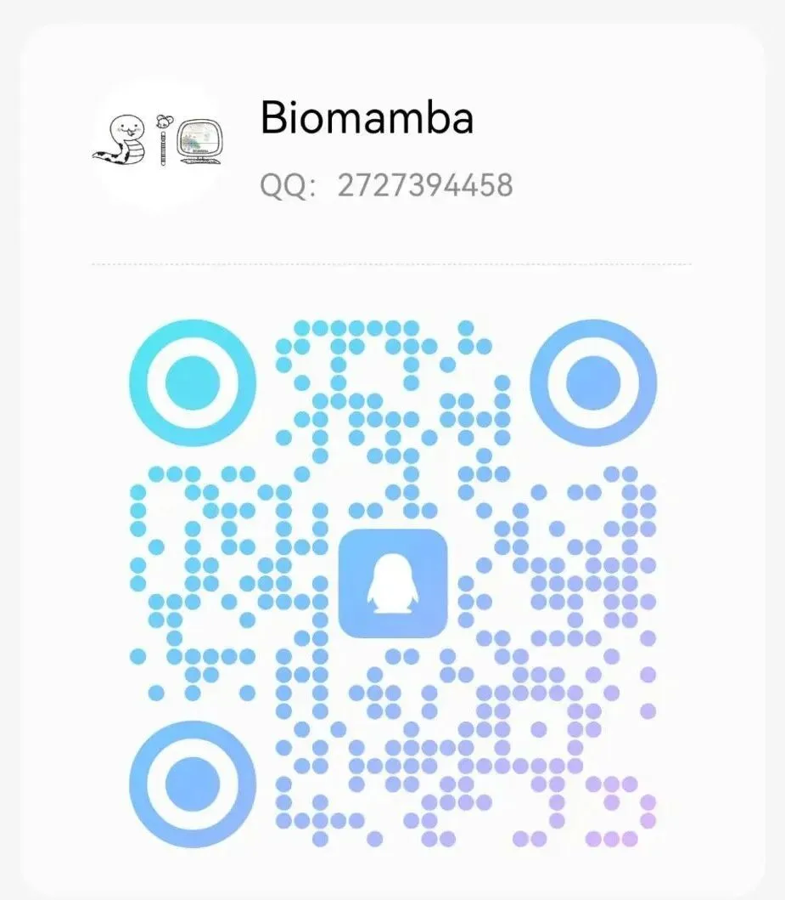

实验基地交流群
原文：https://mp.weixin.qq.com/s?__biz=MzAwMzIzOTk5OQ==&mid=2247528614&idx=2&sn=971fa3a46c01eef82ea58a9a260463ec&chksm=9b3c09f6ac4b80e0bcea379eb372e178ca9d8c6fa626801dc3fdb30ca434cc0b3f9365dcdaf1#rd 合集：生信基地
实验交流群

 长期以来Biomamba都在自己的媒体矩阵中分享生信技能。生命科学毕竟是物质的科学，脱离了实验 总是玩不转的，分析结果也需要去实验验证。我们也希望为大家的科研生涯全方面保驾护航，给大家提供新的服务、交流实验技能的平台。所以，Biomamba联合浙江大学博士团队 组建了一个自己的实验室(Biomamba生信基地终于有 实验基地啦！)，base上海南翔。大家有什么想法可以填写问卷 跟咱反馈反馈：问卷链接，文末阅读原文可直达：https://www.wjx.cn/vm/tpYsP8D.aspx#
长期以来Biomamba都在自己的媒体矩阵中分享生信技能。生命科学毕竟是物质的科学，脱离了实验 总是玩不转的，分析结果也需要去实验验证。我们也希望为大家的科研生涯全方面保驾护航，给大家提供新的服务、交流实验技能的平台。所以，Biomamba联合浙江大学博士团队 组建了一个自己的实验室(Biomamba生信基地终于有 实验基地啦！)，base上海南翔。大家有什么想法可以填写问卷 跟咱反馈反馈：问卷链接，文末阅读原文可直达：https://www.wjx.cn/vm/tpYsP8D.aspx#  更多想法也可以直接添加我们的客服微信[Biomamba_yunying]聊聊，我们也有专门的实验基地交流群。欢迎大家加入：
更多想法也可以直接添加我们的客服微信[Biomamba_yunying]聊聊，我们也有专门的实验基地交流群。欢迎大家加入：


交流群矩阵
首先声明，黑产(什么年代了，还有人买卖文章？)想入群发广告的不良商家请绕道 ：Biomamba生信基地黑榜。为了创造便捷 、高效 、**绿色的交流环境 ，**进群需身份认证。我们按照大家的需求分门别类的组建了交流群，大家添加我们任意账号对应群名关键词即可进群。欢迎大家加入，毕竟按粉丝们的话来说，在群里不说话也能学习到很多 1、生信交流群：目前我们共维护了十五个交流群，用于给大家提供生信交流的平台，相信在大家的互帮互助下能解决大部分问题(没事交流交流科研，求助文献下载、交流投稿经验、吐槽吐槽老板、在群里交交朋友♂)。
2、实验基地交流群：实验基地已经建成，实验技能培养计划也已经热火朝天的开展中。我们给大家构建了实验交流群。大家可以在群中交流实验心得。
3、就业交流群：辛苦的学习与科研无非图个好的就业前景，我们也一直在求职/就业方面为大家提供平台与流量。也欢迎大家联系我们任意账号刊登个人信息，主动发布求职，让更多伯乐看到优秀的你！Biomamba生信基地长期招聘：欢迎大家来生信基地兼职/工作/参观。也欢迎各用人单位联系我们发布岗位。
4、科研相亲交流群：盼望着、盼望着，春天来了，又到了。。。(bushi)。在浩瀚的星空下，我们每个人都是孤单的星辰，怀揣着对知识的渴望，勇敢地探索着自己的科研领域。然而，偶尔在这条孤独的科研旅程中，我们渴望有一个能够理解我们、陪伴我们、与我们共鸣的人。也许，正是因为我们都在追求真理，才会更加懂得，生活中那些小小的温柔和真诚，才是最值得珍惜的宝藏。来吧，群里聊聊，没准能找到你缺少的那一半
1、生信交流群：目前我们共维护了十五个交流群，用于给大家提供生信交流的平台，相信在大家的互帮互助下能解决大部分问题(没事交流交流科研，求助文献下载、交流投稿经验、吐槽吐槽老板、在群里交交朋友♂)。
2、实验基地交流群：实验基地已经建成，实验技能培养计划也已经热火朝天的开展中。我们给大家构建了实验交流群。大家可以在群中交流实验心得。
3、就业交流群：辛苦的学习与科研无非图个好的就业前景，我们也一直在求职/就业方面为大家提供平台与流量。也欢迎大家联系我们任意账号刊登个人信息，主动发布求职，让更多伯乐看到优秀的你！Biomamba生信基地长期招聘：欢迎大家来生信基地兼职/工作/参观。也欢迎各用人单位联系我们发布岗位。
4、科研相亲交流群：盼望着、盼望着，春天来了，又到了。。。(bushi)。在浩瀚的星空下，我们每个人都是孤单的星辰，怀揣着对知识的渴望，勇敢地探索着自己的科研领域。然而，偶尔在这条孤独的科研旅程中，我们渴望有一个能够理解我们、陪伴我们、与我们共鸣的人。也许，正是因为我们都在追求真理，才会更加懂得，生活中那些小小的温柔和真诚，才是最值得珍惜的宝藏。来吧，群里聊聊，没准能找到你缺少的那一半 。
5、国自然必中交流群承接我们去年的国自然活动，必中是一种态度！我们会将国自然交流群维护下去，祝愿各位的科研步伐所到之处，皆是坦途。
。
5、国自然必中交流群承接我们去年的国自然活动，必中是一种态度！我们会将国自然交流群维护下去，祝愿各位的科研步伐所到之处，皆是坦途。
6、影像组学交流群
影像组学+病理组学+深度学习是临床医生发表论文的几大法宝，我们将在群里定期分享影像组学相关知识与课程。
7、测序交流群
Illumina已经被列入不可靠实体清单，越来越多的国产平台在单细胞领域也能够替代10X。生信多组学建库与测序平台似乎进入了一个群雄割据的时代。任何关于技术、价格、样本特征的内容都欢迎群内交流~ 8、QQ交流群有粉丝反馈，觉得500人的群太小了，我已经充好了QQ会员给大家拉两千人的QQ群 。拉群qq号:

已有生信基地联系方式的同学无需重复添加


如何联系我们

 留一个领取资料、免费两周学习版服务器的微信号[Biomamba_zhushou]，方便各位随时交流。同时我们也构建了交流群矩阵，欢迎大家入群讨论。
留一个领取资料、免费两周学习版服务器的微信号[Biomamba_zhushou]，方便各位随时交流。同时我们也构建了交流群矩阵，欢迎大家入群讨论。
大家可以阅读完这几篇之后添加给生信入门初学者的小贴士 如何搜索公众号过往发布内容
已有生信基地联系方式的同学无需重复添加
 您点的每个赞和在看，我都认真当成了喜欢
您点的每个赞和在看，我都认真当成了喜欢